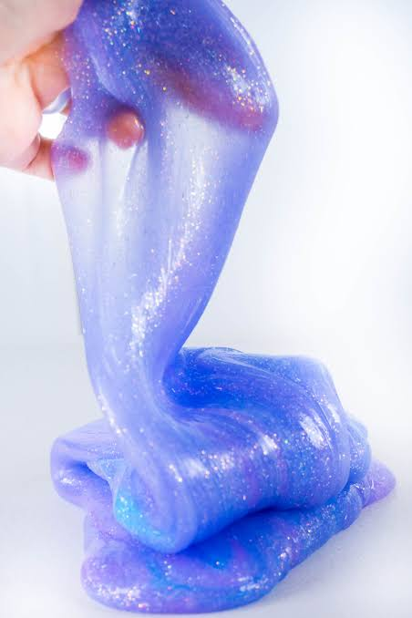

Slime Recipe
Home

Description
This isn't a food. Instead this is a fun toy you can make at home. It's
great for fidgeting and killing time with and its easy to make.
Ingredients
- 1 bottle liquid school glue
- 1/2 teaspoon baking soda
- 1-2 tablesppons contact lens solution
Optional
- Food coloring and glitter
Steps
- Combine glue and baking soda:
Empty the bottle of glue into a
bowl. STir in the 1/2 teaspoon of baking soda until completly mixed
- Add color(optional):
Add a few drops of food coloring or a
pinch of glitter and stir well
- Activate the slime:
Slowly add 1 tablespoon of contact lense
solution to the mixture. Stir Well
- Kneed:
Once it forms a sticky ball, take it out fo the bowl
and knead it with your hands